화약류관리산업기사 (2010-03-07 기출문제)
1과목: 일반화약학
1. 피크린산을 저장하거나 사용할 때 금속물과 직접 접촉하는 것을 피하고 있는 가장 큰 이유는?
- 금속의 열전도도가 크기 때문에
- 보관 비용 절감을 위하여
- 화약 자체가 둔화되므로
- 예민한 화합물을 생성하므로
(정답률: 알수없음)

2. 흑색화약에 대한 설명으로 옳은 것은?
- 화염과 마찰에 둔감하다.
- 흡습을 피하면 오래 저장할 수 있다.
- 발화할 때 후가스가 좋아 터널공사에 주로 사용된다.
- 인화성이 있으모로 흡습 되어도 발화에는 지장이 없다.
(정답률: 알수없음)
3. 다음 화약류에 관한 설명 중 틀린 것은?
- 뇌홍 뇌관의 관체는 구리관을 사용한다.
- 칼릿(Carlit)은 화합화약류에 해당한다.
- 니트로화합물은 질산에스테르에 비하여 일반적으로 안정성이 크다.
- 흑색화약은 도화선의 심약으로 사용될 수 있다.
(정답률: 알수없음)
4. 폭약의 폭속을 시험하고자 할 때 사용되는 시험방법이 아닌 것은?
- 이온갭법
- 광섬유법
- 도트리슈법
- 탄동진자시험법
(정답률: 알수없음)
5. 다음 구조식 중 TNT를 나타내는 것은?
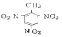
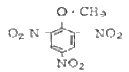
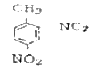
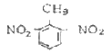
(정답률: 알수없음)
6. 비중은 약 1.7, 융점은 약 141℃인 백색의 주상결정으로 충격에는 예민하지만 열에는 비교적 둔감하고 뇌관의 첨장약으로 사용되는 폭약은?
- C10H5(NO2)2
- C8H4(NO2)2
- C(CH2ONO2)4
- C6H3(NO2)3
(정답률: 알수없음)
7. 다이너마이트 제조시 첨가되는 니트로화합물의 주된 용도에 해당하는 것은?
- 가연물
- 감열소염제
- 산소공급제
- 예감제
(정답률: 알수없음)
8. 니트로셀룰로오스를 합성하는 방법이 아닌 것은?
- 아벨(Abel)식
- 비아지(Biazzi)식
- 톰슨(Thomson)식
- 듀폰(duPont)식
(정답률: 알수없음)
9. 흑색화약 제조과정에서 201혼화 공정에 해당하는 것은?
- 옥탄과 유황의 혼합
- 유황과 초석의 혼합
- 초석과 목탄의 혼합
- 목탄, 초석 및 유황의 혼합
(정답률: 알수없음)
10. 다음 화약류 중 합성할 때 질산과 황산의 혼산을 사용하지 않는 것은?
- TNT
- 니트로글리세린
- 절화면
- 뇌홍
(정답률: 알수없음)
11. 다이너마이트용으로 니트로글리세린을 제조할 때 순도 몇 % 이상인 글리세린을 사용해야 하는가?
- 98.5
- 78.5
- 58.5
- 38.5
(정답률: 알수없음)
12. 옥분 2kg을 완전 연소시킬 때 960L 의 산소가 부족하여 산소공급제를 사용하고자 한다. 이 때 첨가할 산소공급제의 양은 약 몇 kg인가? (단, 산소공급제 1kg 당 산소는 277L 발생한다.)
- 0.51
- 1.02
- 2.42
- 3.47
(정답률: 알수없음)
13. 화약류의 성능을 구분할 때 Low explosives와 High explosives의 차이는 무엇으로 구분하는가?
- 폭발속도
- 폭발온도
- 분자량
- 비중
(정답률: 알수없음)
14. 질산암모늄 폭약에 있어서 질산암모늄과 예감제의 혼합물에 옥분 또는 전분을 혼합하는 이유는?
- 산소공급
- 고화 방지
- 폭약 온도 상승
- 위력 증대
(정답률: 알수없음)
15. 다음 중 뇌홍의 주원료에 해당하는 것은?
- 수은
- 옥탄
- 수산화나트륨
- 염소산칼륨
(정답률: 알수없음)
16. 산업용 폭약류의 배합성분 중 예감제가 아닌 것은?
- 과염소산암모늄
- 니트로글리세린
- 디니트로나프탈렌
- 니트로글리콜
(정답률: 알수없음)
17. 기폭약의 폭발시 외부작용으로 가장 먼 것은?
- 마찰
- 산소
- 충격
- 정전기
(정답률: 알수없음)
18. 다음 반응식을 이용해 TNT의 1g당 산소평형 값을 구하면 약 몇 g인가?
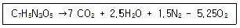
- -0.37
- -0.74
- -1.48
- -1.74
(정답률: 알수없음)
19. 다음 중 화약류의 안정도 시험방법이 아닌 것은?
- 유리산시험
- 가열시험
- 내열시험
- 마찰시험
(정답률: 알수없음)
20. 순폭시험에서 순폭도(n)를 구하는 식을 옳게 나타낸 것은? (단, S는 제2약포가 제1약포의 폭발로 순폭하는 최대거리이고, 이 때의 약포경을 d라 한다.)
- n=S/d
- n=d/S
- n=S/d+0.3
- n=S/d-0.3
(정답률: 알수없음)
2과목: 발파공학
21. 평행공 심발법(Parallel Cut)의 특징에 대한 설명으로 옳지 않은 것은?
- 터널, 갱도의 크기에 따라 1회 발파당 굴진장에 제한을 적게 받는다.
- 파석의 비산거리가 비교적 적고 막장 부근에 집중 되므로 파석처리가 편리하다.
- 불발, Cut-off 등의 현상이 일어나므로 전기뇌관의 종류(초시차) 및 기폭약포의 위치에 주의해야 한다.
- 경사공 심발법에 비해 장약이 유폭되거나 사압현상으로 불발잔류를 일으키지 않는다.
(정답률: 알수없음)
22. 다음 중 전색물의 조건으로 옳지 않은 것은?
- 정전기의 발생으로 인한 뇌관의 기폭을 방지하기 위해 발파공벽과의 마찰이 작을 것
- 압축물이 작지 않아서 단단하게 다져질 수 있는 것
- 틈새를 쉽게 그리고 빨리 메울 수 있는 것
- 불발이나 잔류폭약을 회수하기에 안전한 것
(정답률: 알수없음)
23. 저항 1.2[Ω]의 전기뇌관 10개를 병렬 결선하여 저항 0.01[Ω/m]인 모선 (총연장 60m)으로 제발시키는데 필요한 전압은 얼마인가? (단, 소요전류는 2[A], 발파기의 내부저항은 1.2[Ω])
- 24.6[V]
- 38.4[V]
- 52.3[V]
- 60.5[V]
(정답률: 알수없음)
24. 천공간격을 일반적인 벤치발파보다 넓히고 저항선은 작게하여 발파 후 파쇄 암석의 입도를 작고 비교적 균일하게 하기 위하여 시행하는 발파법은?
- 쿠션 발파(Cushion Blasting)
- 프리 스플리팅(Pre splitting)
- 트림 발파(Trim Blasting)
- 와이드 스페이스 발파(Wide space Blasting)
(정답률: 알수없음)
25. 건물에 대해 발파해체공법을 적용하여 발파한 후 현장점검사항으로 옳지 않은 것은?
- 붕괴방향
- 주변피해
- 구조물의 파쇄형태
- 발파위치의 방호방법
(정답률: 알수없음)
26. 다음 중 적절한 폭약의 선정기준으로 옳지 않은 것은?
- 절리가 없는 암반에 대해서는 에멀젼이나 다이나마이트 폭약이 적절하다.
- 발파공내에 불이 많은 경우에는 벌크 형태의 ANFO가 적절하다.
- 절리가 많은 암반에 대해서는 ANFO가 유리하다.
- 건물이 인접한 경우에는 저폭속 폭약이 유리하다.
(정답률: 알수없음)
27. 탄성파에는 두가지 기본적인 형태로 물체파(Body wave)와 표면파(Surface wave)가 있다. 다음 중 표면파에 속하지 않는 것은?
- S파(횡파)
- L파(Love 파)
- C파(Couple 파)
- R파(Rayleigh 파)
(정답률: 알수없음)
28. 트렌치(trench) 발파에 대한 설명으로 옳지 않은 것은?
- 일반적으로 계단의 폭이 4m보다 작다.
- 정상적인 계단식 발파보다 비장약량이 증가하고 비천공장이 길어진다.
- 발파공의 경사는 3:1보다 작아야 하며, 가급적 경사천공은 피해야 한다.
- 전통적인 트렌치 발파방법에서는 중간공들이 측벽공 앞에 위치하나 장약량은 모든 발파공에 동일하게 한다.
(정답률: 알수없음)
29. 어떤 시험발파에서 최소저항선 0.6m, 장약량 0.4kg을 사용하여 발파한 결과, 누두반경이 0.72m인 누두공이 생성되었다. 최소저항선을 동일하게 할 때 표준발파가 되기 위한 장약량은 얼마인가?
- 0.26kg
- 0.35kg
- 0.45kg
- 0.52kg
(정답률: 알수없음)
30. 다음 중 수중발파 작업시 유의해야 할 사항으로 옳지 않은 것은?
- 비장약량은 노천발파보다 더 큰 값을 적용한다.
- 폭약 및 기폭장치는 양호한 내수성과 수압에 대한 충분한 저항성을 가져야 한다.
- 수중이므로 발파공해 문제가 없어 진동이나 충격파에 대한 대비가 필요 없다.
- 2차 파쇄가 어렵고 발파비용이 높기 때문에 발파는 항상 만족스러운 결과를 얻어야 한다.
(정답률: 알수없음)
31. 다음 중 Lilly(Blasting Index, BI)를 구성하는 요소가 아닌 것은?
- 암반형태
- 절리간격
- 지하수상태
- 암석경도
(정답률: 알수없음)
32. 다음 그림은 발파의 경제성을 평가하기 위한 그래프로서 파쇄물의 최대 크기(입도)에 대한 천공 및 발파, 운반, 소할 비용 등을 표시하고 있다. 이 그림에서 ㉮곡선이 가리키는 것은 무엇인가?
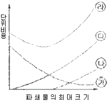
- 운반비용
- 천공 및 발파비용
- 소할비용
- 총비용
(정답률: 알수없음)
33. 다음의 발파조건으로 2자유면 벤치발파를 실시하고자 한다. 비장약량(specific charge)은 얼마인가?
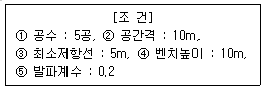
- 1.0kg/m3
- 0.5kg/m3
- 0.3kg/m3
- 0.2kg/m3
(정답률: 알수없음)
34. NG 60%인 스트렝스 다이나미이트 1kg으로 어떤 암석을 파괴했다면 NG 35%인 다이나마이트를 사용할 경우 얼마의 다이너마이트가 필요한가?
- 0.8kg
- 1.0kg
- 1.2kg
- 1.5kg
(정답률: 알수없음)
35. 다음은 어느 발파현장에서 발파진동을 측정한 기록이다. 최대 의사백터합(pseudo maximum vector sum)은 얼마인가? (단, 진동측정단위는 cm/sec)
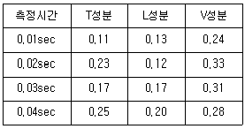
- 0.39cm/sec
- 0.42cm/sec
- 0.43cm/sec
- 0.46cm/sec
(정답률: 알수없음)
36. 공발(Blown-out shot)의 일반적인 원인으로 옳지 않은 것은?
- 암반에 많은 균열층이 있을 때
- 전색이 불충분할 때
- 약장약일 때
- 자유면에 경사천공하였을 때
(정답률: 알수없음)
37. 수준발파(leveling)에 대한 설명으로 옳지 않은 것은?
- 계단높이가 최대 저항선(maximum burden)의 2배보다 낮은 곳에 사용한다.
- 암석 파쇄입도를 크게 하기 위해 발파공 사이 지연시간을 길게 한다.
- 일반적으로 수직천공을 실시하여 발파한다.
- 비산위험과 자반진동을 줄이기 위해 소구경의 발파공을 사용한다.
(정답률: 알수없음)
38. 심빼기 번컷(Burn-cut)에서 무장약공경 10cm, 장약공경 3.3cm일 때 장약공의 단위길이당 장약량은? (단, Langefors식을 이용하고, 두장약공과 장약공의 중심간 거리는 150mm이다.)
- 2.61kg/m
- 1.21kg/m
- 0.76kg/m
- 0.28kg/m
(정답률: 알수없음)
39. 다음 중 발파진동에 대한 설명으로 맞는 것은?
- 발파진동의 주파수는 1Hz 정도이다.
- 발파로 인하여 발생하는 총에너지 중에서 0.5∼20%가 탄성파로 변환되어 발파진동으로 소비된다.
- 발파에 의해 발생한 지반운동은 일반적으로 변위, 입자속도, 가속도 3성분과 진폭으로 표시된다.
- 발파진동의 지속시간은 10초 이상이며, 진동의 파형은 지진동과 비교하여 복잡하다.
(정답률: 알수없음)
40. 댐, 항만, 도로 등의 건설에 있어서 산이나 구릉지의 하부에 대규모 장약을 한 후 발파하여 암석을 적당한 크기로 파쇄 시키면서 소정의 위치로 이동시키는 발파방법은 무엇인가?
- 협동장약발파(Cooperating Charge Blasting)
- 정향발파(Direction Blasting)
- 글로리졸 발파(Glory Hole Blasting)
- 트림발파(Trim Blasting)
(정답률: 알수없음)
3과목: 암석역학
41. 등방성의 물체에 압력을 가했더니 종방향의 변형률 εx=3.0×10-3, 횡방향의 변형률 εr=0.9×10-3이 발생하였다. 이 물체의 체적탄성률은 얼마인가? (단, 영률E=2.4×105kg/cm2)
- 2.0×105kg/cm2
- 5.0×105kg/cm2
- 6.0×105kg/cm2
- 1.14×105kg/cm2
(정답률: 알수없음)
42. 탄성파 전파속도에 영향을 미치는 요소에 대한 설명으로 맞는 것은?
- 단성파 속도는 암석에 작용하는 구속응력에 반비례한다.
- 온도가 상승하면 P파 속도는 감소한다.
- 층상암석에서 층에 평행한 탄성파 속도가 수직방향의 탄성파 속도보다 작게 나타난다.
- 공극률이 큰 암석에서는 함수상태에 따라 P파, S파가 모두 민감한 영향을 받는다.
(정답률: 알수없음)
43. 터널 굴착시 지보재로 사용되는 숏크리트(shotcrete)는 시공법에 따라 건식공법과 습식공법으로 분류할 수 있다. 다음 중 습식공법과 비교하여 건식공법의 설명으로 틀린 것은?
- 토층에서 물과 재료를 혼합하기 때문에 품질관리가 용이하다.
- 재료만을 공급하면 되므로 운반시간 등 공급 작업의 제한이 적다.
- 비교적 장거리 입송이 가능하다.
- 분진과 리바운드 량이 비교적 많이 발생한다.
(정답률: 알수없음)
44. 터널계측은 일상적인 시공관리를 위한 일상계측(계측 A)과 암반조건에 따라 추가로 실시되는 정밀계측(계측 B)으로 분류된다. 다음 중 일상계측 (계측 A)에 해당하지 않는 것은?
- 갱내관찰조사
- 내공변위측정
- 천단침하측정
- 록볼트 축력측정
(정답률: 알수없음)
45. Q-system에 의한 암반평가 결과 Q 값이 10인 암반에 지하저장 공동을 굴착하고자 한다. 최대 무지보 폭은 얼마인가? (단, 굴착지보계수(ESR)는 1.3 이다.)
- 1.85m
- 3.67m
- 6.53m
- 9.45m
(정답률: 알수없음)
46. 다음 복합체의 역학적 모형 중 대시포드를 포함하지 않는 것은?
- Maxwell 물체
- Kelvin 물체
- St. Venant 물체
- Bingham 물체
(정답률: 알수없음)
47. 터널의 안정성 해석 등을 목적으로 사용되는 수치해석기법 중 지반을 연속체(continuum)로 가정하여 해석하는 기법이 아닌 것은?
- 유한요소법
- 유한차분법
- 경계요소법
- 개별요소법
(정답률: 알수없음)
48. 다음 중 파괴이론에 대한 일반적인 설명으로 틀린 것은?
- 취성재료인 암석은 파괴응력을 구분하기 어려운 것이 보통이다.
- 연성재료인 금속은 파괴응력과 항복응력을 확실히 구분할 수 있다.
- 응력-변형률 관계로 본 암석의 파괴형태는 취성파괴와 연성파괴로 나눌 수 있다.
- 암석의 주위를 큰 압력으로 봉압하면 상당히 변형한 후 파괴되는데 이를 취성파괴라고 한다.
(정답률: 알수없음)
49. 직경 6cm, 길이 12cm의 암석시편이 25ton의 수직하중을 받고 파괴되었다면 이 시편의 길이와 직경의 비가 1:1 일 때 압축강도는 얼마인가?
- 863.6kg/cm2
- 723.6kg/cm2
- 994.6kg/cm2
- 1325.6kg/cm2
(정답률: 알수없음)
50. 다음 중 중간 주응력을 고려한 암석파괴이론은?
- Tresca 이론
- Griffith 이론
- Hoek-Btown 이론
- Ven Mises 이론
(정답률: 알수없음)
51. 다음 그림은 일축압축강도 및 일축인장강도를 모어(Mohr)의 응력원으로 표시한 것이다. 이 모어의 응력원에 의하여 구할 수 있는 것은?
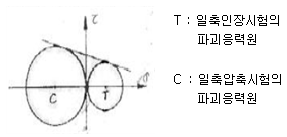
- 3축 압축강도
- 굴곡강도
- 전단강도
- 암석의 탄성계수
(정답률: 알수없음)
52. 다음의 조건으로 Hoek-Brown의 파괴조건식을 이용하여 최대주응력을 구하면 얼마인가?
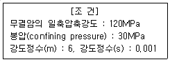
- 170MPa
- 173MPa
- 177MPa
- 180MPa
(정답률: 알수없음)
53. 암석의 역학적 성질 중 크리프(creep) 현상에 대한 설명으로 맞는 것은?
- 응력과 변형률이 비례하는 현상이다.
- 일정한 변형률 하에서 응력이 시간에 따라 증대하는 현상이다.
- 일정한 응력 하에서 변형률이 시간에 따라 증대하는 현상이다.
- 횡변형률이 증가함에 따라 종변형률이 감소하는 현상이다.
(정답률: 알수없음)
54. 단축압축 하중 상태의 원형공동에서 하중방향과 90°인 지점(측벽부)에서 발생하는 접선방향응력은 작용응력의 몇 배가 되는가?
- 1배
- 2배
- 3배
- 4배
(정답률: 알수없음)
55. 현지 암반의 RMR값으로 70을 얻었을 때 이 암반의 변형계수는 얼마인가?
- 15 GPa
- 32 GPa
- 40 GPa
- 70 GPa
(정답률: 알수없음)
56. 다음 중 단축압축강도에 영향을 주는 요인이 아닌 것은?
- 시험편의 형상
- 시험편의 크기
- 시험기의 용량
- 가압 속도
(정답률: 알수없음)
57. 다음 중 극한평형법을 이용하여 안전율을 계산할 수 없는 사면파괴 유형은?
- 전도파괴
- 원호파괴
- 평면파괴
- 쐐기파괴
(정답률: 알수없음)
58. 터널설계와 관련한 현장시험 중에서 현지암반에 작용하는 조기응력을 측정하는 시험법은?
- 수압파쇄시험
- 압력터널시험
- 공내재하시험
- Lugeon 시험
(정답률: 알수없음)
59. 수평 터널 단면의 응력상태를 나타내는 평면 변형률 상태에서 그 성분의 값이 0 이 아닌 것은? (단, 터널 단면은 x, y축, 터널의 축방향은 z축이다.)
- γxy
- εx
- γyz
- γxz
(정답률: 알수없음)
60. 다음 사면 안정화 공법 중 안전율증가법(억지공)에 해당되지 않는 것은?
- 배수공법
- 옹벽공법
- 점토공법
- 암성토공법
(정답률: 알수없음)
4과목: 화약류 안전관리 관계 법규
61. 화약류 저장소 설치자는 화약류 출납부와 기입을 완료한 날로부터 몇 년간 이를 보존해야 하는가?
- 1년
- 2년
- 3년
- 5년
(정답률: 알수없음)
62. 화약류관리보안책임자가 과실에 의해 폭발사고를 야기하여 인명을 사상케 한 경우 행정처분기준은? (단, 10명 사상일 경우)
- 면허 취소
- 6월 효력정지
- 3월 효력정지
- 1월 효력정지
(정답률: 알수없음)
63. 화약류 운반용 축전지차의 구조의 기준에 대한 설명으로 틀린 것은?
- 차바퀴에는 고무타이어를 사용할 것
- 적재함 또는 짐받이 아래면과 차축과의 사이에는 적당한 완충장치를 할 것
- 축전지는 진동에 의한 영향을 받지 아니하는 것으로 하고, 사용전압은 110볼트 이하로 할 것
- 전동기정류차·제어기·전기개폐기·전기단자 그 밖의 불꽃이 생길 염려가 있는 전기장치에는 화재나 폭발의 발생을 방지할 수 있는 차폐장치를 할 것
(정답률: 알수없음)
64. 총포·도검·화약류 등 단속법상 화약류의 운반방법으로 틀린 것은?
- 도폭선 1000m를 운반신고 없이 운반하였다.
- 미진동파쇄기 3500개를 운반신고 없이 운반하였다.
- 화약류 운반개시 1시간 전에 발송지를 관할하는 경찰서장에게 화약류운반신고를 하였다.
- 화약류운반신고필증을 화약류의 사용 후 반납을 고려하여 화약류의 사용 종료시까지 소지하였다.
(정답률: 알수없음)
65. 꽃불류 사용의 기술상의 기준에 대한 설명으로 맞는 것은?
- 풍속이 초당 20미터 이상 일 때는 꽃불류의 사용을 중지할 것
- 쏘아 올리는 꽃불류는 20미터 이상의 높이에서 퍼지도록 할 것
- 사용준비가 끝난 쏘아 올리는 꽃불류로부터 30미터 이내의 장소에는 다른 쏘아 올리는 꽃불류를 사용하지 아니할 것
- 꽃불류의 발사용 화약에 점화하여도 그 화약이 폭발 또는 연소되지 아니하는 때에는 발사통에 많은 양의 물을 넣고 5분 이상 경과한 후에 꽃불류를 꺼낼 것
(정답률: 알수없음)
66. 지하에 설치하는 2급 저장소의 위치·구조 및 설비의 기준으로 틀린 것은?
- 안쪽 벽은 철근콘크리트 또는 보강콘크리트블럭으로 할 것
- 저장소의 내부는 판자로 하고, 마루표면 또는 콘크리트 바닥에는 철물류가 나타나지 아니하도록 할 것
- 저장소의 바깥에는 특별한 사정이 없는 한 야간에 전등을 켜고 도난방지를 위한 비상벨 등의 장치를 할 것
- 저장소 내부를 조명하는 설비를 하는 때에는 방폭식의 전등으로 할 것
(정답률: 알수없음)
67. 화약류저장소에 흙둑을 쌓는 경우 흙둑의 설치 기준으로 틀린 것은?
- 흙둑은 저장소의 바깥쪽 벽으로부터 흙둑의 안쪽 벽 밑까지 1미터 이상 2미터 이내의 거리를 두고 쌓아야 한다.
- 저장소 출입구 쪽의 흙둑은 화약 운반용 지게차 등이 출입할 수 있도록 2미터 이상의 거리를 둘 수 있다.
- 흙둑의 경사는 45도 이하로 하고, 정상의 폭은 1미터 이상으로 해야 한다.
- 2개 이상의 저장소가 인접하여 중간의 흙둑을 같이 사용하는 때에는 그 흙둑에 통로를 설치하여 위급한 상황의 발생시 대피에 지장이 없도록 해야 한다.
(정답률: 알수없음)
68. 다음 중 화약류 사용장소에서 화약류관리보안책임자의 안전상 지시·감독에 따르지 아니한 화약류취급자에 대한 벌칙으로 맞는 것은?
- 5년 이하의 징역 또는 1천만원 이하의 벌금
- 3년 이하의 징역 또는 700만원 이하의 벌금
- 2년 이하의 징역 또는 500만원 이하의 벌금
- 300만원 이하의 벌금
(정답률: 알수없음)
69. 화약류 판매업의 시설기준으로 틀린 것은?
- 자가전용의 화약류 저장소를 설치할 것
- 화약류 저정소에는 차량에 의한 안전운반이 가능하도록 저장소 입구까지 진입로를 개설할 것
- 화약류 저장소 주위에 도난방지 등을 위한 경비초소를 설치할 것
- 판매업소 및 화약류 저장소의 위치는 유동과정에 있어서 위험성이 없는 곳일 것
(정답률: 알수없음)
70. 장난감용 꽃불류저장소의 장난감용 꽃불류의 최대저장량은?
- 1톤
- 5톤
- 10톤
- 20톤
(정답률: 알수없음)
71. 폭약 20분을 저장하는 1급 화약류저장소와 제1종 보안물건간의 보안거리는 44m 이상, 제3종 보안물건 간의 보안거리는 220m 이상 일 때 화약류저장소의 경비실에 대한 보안 거리는?
- 27.5m 이상
- 36.7m 이상
- 55m 이상
- 110m 이상
(정답률: 알수없음)
72. 다음 중 화약류 양수허가의 유효기간에 대한 설명으로 맞는 것은?
- 3개월을 초과할 수 없다.
- 6개월을 초과할 수 없다.
- 1년을 초과할 수 없다.
- 2년을 초과할 수 없다.
(정답률: 알수없음)
73. 화약류의 운반방법의 기술상의 기준에 관한 설명으로 맞는 것은?
- 화약류의 운반은 자동차(2륜자동차 제외)에 의하여야 하며, 300킬로미터 이상의 거리를 운반하는 때에는 교체할 수 있는 예비운전자 1명을 태울 것
- 화약류를 실은 차량이 서로 진행하는 때(앞지르는 경우를 제외한다.)에는 100미터 이상, 주차하는 때에는 50미터 이상의 거리를 둘 것
- 뇌홍 및 뇌홍을 주로 하는 기폭약은 수분 또는 알코올분이 30퍼센트 정도를 머금은 상태로 운반할 것
- 야간이나 앞을 분간하기 힘든 경우에 주차하고자 하는 때에는 차량의 전방과 후방 30미터 지점에 적색등불을 달 것
(정답률: 알수없음)
74. 화약류 취급소에 관한 설명으로 틀린 것은?
- 화약류 취급소는 화약류 사용장소 부근에 전폭약포의 제작 또는 취급 작업 등 화약류의 관리 및 발파의 준비에 전용되는 건물이다.
- 화약류 취급소의 지붕은 스레트·기와 그 밖의 불에 타지 아니하는 재료를 사용한다.
- 화약류 취급소에 난방장치를 하는 때에는 온수·증기 또는 열기를 이용하는 것만을 사용한다.
- 화약류 취급소에는 장부를 비치하고 화약류의 수불 및 그 사용하고 남은 양을 명확히 기록하여야 한다.
(정답률: 알수없음)
75. 화약류 판매업자가 판매를 위해 화약류저장소 외의 장소에 저장할 수 있는 화약류의 수량으로 맞는 것은?
- 폭약 10kg
- 도폭선 300m
- 총용뇌관 5000개
- 실탄 30000개
(정답률: 알수없음)
76. 화약류의 취급에 관한 설명으로 틀린 것은?
- 화약류를 취급하는 용기는 전기가 통하지 않는 것으로 한다.
- 사용하다가 남은 화약류 또는 사용에 적합하지 아니한 화약류는 즉시 폐기 조치한다.
- 굳어진 다이나마이트는 손으로 주물러서 부드럽게 한다.
- 전기뇌관은 도통시험을 하되, 미리 시험전류를 측정하여 0.01[A]를 초과하지 아니한 것을 사용한다.
(정답률: 알수없음)
77. 다음은 전기발파의 기술상의 기준에 대한 사항이다. ( )안에 알맞은 내용은?
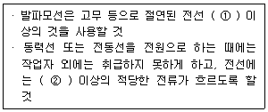
- ① 10m, ② 0.1 암페어
- ① 20m, ② 0.1 암페어
- ① 30m, ② 1 암페어
- ① 50m, ② 1 암페어
(정답률: 알수없음)
78. 다음 중 경찰서장의 설치 허가를 받아야 하는 화약류 저장소는?
- 간이저장소
- 수중저장소
- 도화선저장소
- 장난감용 불꽃류저장소
(정답률: 알수없음)
79. 화약과 비슷한 추진력 폭발에 사용될수 있는 것으로서 대통령령이 정하는 것에 포함되지 않는 것은?
- 산화구리를 주로 한 화약
- 과염소산염을 주로 한 화약
- 황산알루미늄을 주로 한 화약
- 크롬산납을 주로 한 화약
(정답률: 알수없음)
80. 화약류저장소 완성검사에 대한 설명으로 맞는 것은?
- 화약류저장소설치자는 허가를 받은 날부터 1년 이내에는 완성검사를 받을 수 없다.
- 화약류저장소설치자는 허가를 받은 날부터 부득이한 사유가 있어 연장을 한다고 해도 2년 이내에는 완성검사를 받아야 한다.
- 완성검사전이라도 부득이한 사정이 있을 때에는 경찰관서의 승낙을 얻어 화약류저장소의 사용개시가 가능하다.
- 화약류저장소설치자는 허가를 받은 날부터 1년 이내에는 완성검사를 받아야 하나 화약류저장소 설치자의 귀책이 아닌 부득이한 사유가 있을 시에는 1년씩 2회의 연장이 가능하다.
(정답률: 알수없음)